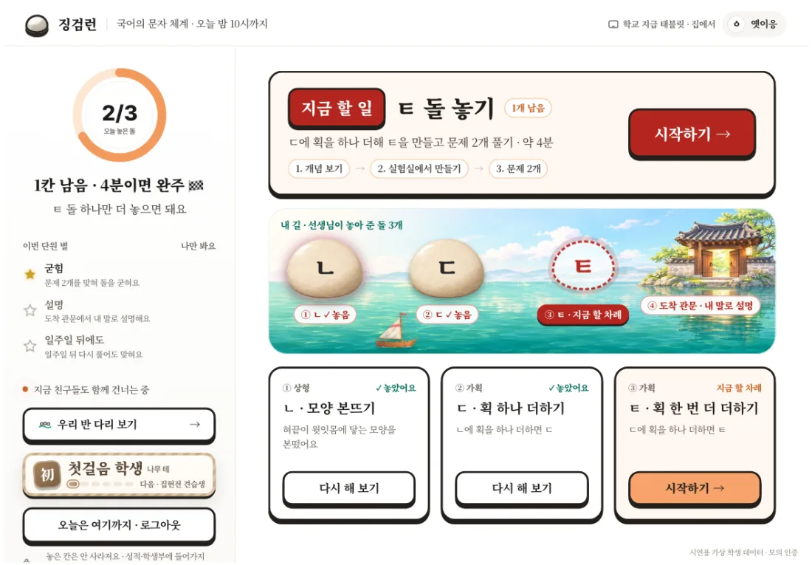

Case study
징검다리
플립러닝 사전학습 결손을 수업 전에 찾아 메우는 교사 지원 서비스

상황: 모르는 분야의 요구를 받았습니다
예비교사와 예비개발자가 한 팀이 되는 해커톤이었습니다.
사범대 팀원 두 명이 주제와 자료를 넘겨주면, 저와 동기가 이해하고 서비스로 만드는 구조였습니다. 처음 받은 요청은 이랬습니다.
"얼굴 인식으로 학생이 수업 영상을 실제로 보는지 기록하고, 의욕과 능력으로 학생을 유형별로 나눠 주세요."
저희 둘은 교육 도메인 지식이 없었습니다. 플립러닝이나 선수 개념 같은 말부터 처음에는 이해가 안 되는 부분이 많았습니다.
모르는 걸 어떻게 좁혔나
추측으로 기획하지 않고, 묻고 다시 정리해서 확인받았습니다.
질문 14개로 요구 좁히기
"절대 빠지면 안 되는 한 가지는 무엇인가요?"부터 물었습니다. 답은 '학생의 학습 과정 분석'이었고, 얼굴 인식은 보조 기능이어도 된다고 했습니다.
우리가 받은 교육에서 출발
저희도 교육을 받아 온 사람이라는 데서 시작했습니다. 팀원들이 플립러닝, 태블릿 지급, 고교학점제처럼 예전과 달라진 점을 쉽게 설명해 줬습니다.
화면으로 다시 돌려주기
들은 내용을 개발 용어 대신 사용자 시나리오와 화면으로 정리해 보여 줬습니다. 교육 전문가와 슈퍼스쿨 기획팀, 개발팀에게도 방향을 확인받았습니다.
처음 요청을 이렇게 바꿨습니다
원하는 것은 살리고, 학생에게 꼬리표나 감시가 되는 부분은 바꿨습니다.
| 처음 요청 | 바꾼 결정 | 이유 |
|---|---|---|
| 얼굴 인식으로 학생의 영상 시청 확인 | 얼굴은 학생에게 쓰지 않고, 학생 정보를 여는 교사 본인 확인에만 씁니다. 비밀번호로도 같은 효력입니다. | EU AI법은 교육기관에서 감정을 추론하는 AI를 금지하고, 학생에게는 감시로 읽힙니다. 사범대 쪽이 함께 원했던 교사 얼굴 인증 접근은 살렸습니다. |
| 의욕과 능력으로 4유형 분류 | 참여 신호, 선수 개념, 환경 세 축의 8유형으로 바꿨습니다. 참여 신호는 영상 미시작, 확인 질문 무응답, 말해보기 미제출처럼 관찰된 사건으로만 봅니다. | '의욕이 낮다'는 미성년자에게 꼬리표가 됩니다. 집에 기기가 없는 학생은 환경 문제부터 풀게 했습니다. |
| 헷갈린 부분을 한 줄로 쓰게 하기 | "오늘 배운 개념 말해보기"로 바꾸고, AI가 이 답에서 막힌 개념을 찾습니다. | 예비교사 팀원이 "쓰라고 하면 안 쓸 것 같다"고 답했습니다. |
| AI가 학생 유형과 대응을 판단 | AI는 읽고, 규칙은 고르고, 선생님이 승인합니다. 모든 AI 결과에 "교사 본인이 직접 확인하시길 바랍니다"를 띄웠습니다. | "유형까지는 AI가 제시하고, 교사는 판단하는 역할이면 좋겠다"는 팀원 의견을 그대로 구조로 옮겼습니다. |
만든 것
교사, 학생, 교실 세 화면이 하나의 수업 사이클로 이어집니다.
- 수업 예보: AI가 학생 30명의 말해보기 답을 읽고 막힌 개념 TOP 3와 구간별 상태를 수업 전에 보여 줍니다.
- 8유형 공간: 세 축으로 학생 위치를 3D로 보여 주고, 학생별 근거와 지도 방향을 제안합니다. 내 담당
- 징검런: 학생은 선생님이 승인한 만큼의 징검돌을 개념 보기, 글자 만들기, 문제 풀이로 놓습니다. 내 담당
- 우리 반 다리: 굳힌 돌이 반 다리가 되고, 비어 있는 구간은 수업 첫 8분에 함께 메웁니다. 내 담당
- 징검돌 문제 만들기: 성취기준과 차시를 고르면 AI가 문제 초안을 만들고, 교사가 검토한 것만 학생에게 갑니다.
- 학생 정보 보호: 학생이 드러나는 정보는 교사 재인증 뒤에만 열리고, 외부 AI에는 가명 처리한 답만 보냅니다.


AI 호출과 분석 API는 백엔드 담당 동기가 맡았습니다. 학생 30명은 모두 시연용 가상 데이터입니다.
결과
(키워드만 썼을 때 20/30)
29/30은 가상 답 30개에 예비교사가 단 정답과 비교한 값입니다. 실제 학생 답에서의 정확도는 파일럿에서 다시 재야 하는 숫자입니다.
배운 것, 다음
지식이 부족한 쪽이 있는 협업에서 중요한 건 서로의 말을 번역하는 일이었습니다. 팀원들은 요즘 교실을 쉽게 설명해 줬고, 저는 그걸 화면과 흐름으로 바꿔 다시 확인받았습니다. 서로 이해하고 공감하는 시간을 먼저 가졌기 때문에 짧은 시간에도 원하는 서비스를 끝까지 만들 수 있었습니다.
이 경험으로 교육과 AI를 묶은 서비스를 기획하고 개발해 사업화까지 해 볼 계획입니다.